CentOS上dhcp服务的安装与配置
一、在linux上实现单作用域的dhcp服务
（ 本实训的基础设施是VMware Workstation虚拟机里linux enterprise 5.4系统的主机和winxp的主机）
1、挂载光盘，安装dhcp软件包
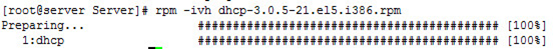
2、 rpm -ql dhcp|less查看安装完软件包后生成的各类文件
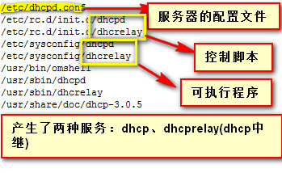
3、把配置文件的样例文件的内容拷到配置文件并做相应的修改
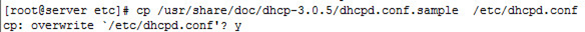
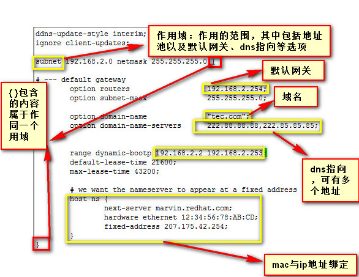
dhcp的配置文件完成配置后输入service dhcpd start 启动服务
4、开启客户端，开启地址自动获得功能，另外需要注意的是虚拟机本来就提供dhcp的服务，为了不影响我们的实验，这里需要我们在虚拟机的编辑---虚拟网络编辑器里进行配置（如下图所示），网络连接模式设置为host-only
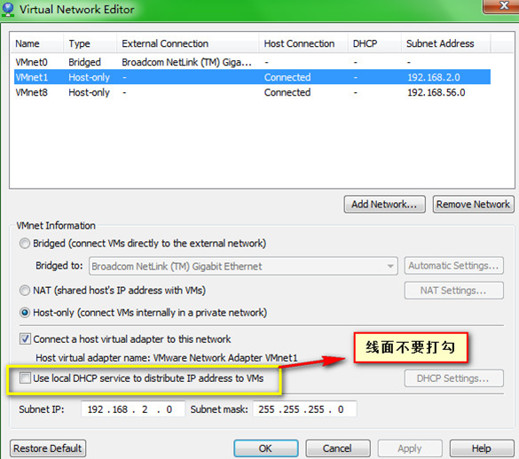
5、观察服务器端日志可以发现地址192.168.2.253分配给了客户端（dhcp服务工作的原理和其他部分基础知识在我的另一篇博客《浅谈dhcp服务》可见）
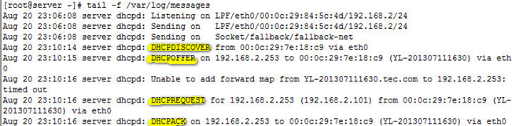
查看客户端ip地址及其他参数
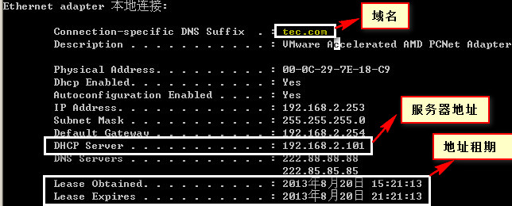
6、在客户端释放并重获得ip地址
在客户端命令行界面下输入ipconfig /release释放ip地址并在服务器端观察日志
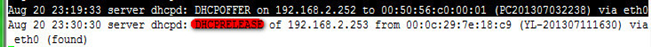
在客户端命令行界面下输入ipconfig /renew重获得ip地址并在服务器端观察日志
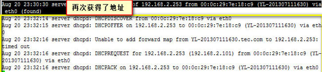
7、地址排除和地址绑定
有时候有些地址不需要分配给客户，那么我们就需要把地址分段来写，做一下地址排除。另外有些客户端地址要我们配置静态的，就需要我们为它做一下ip和mac的绑定。
在dhcp配置文件配置相关参数
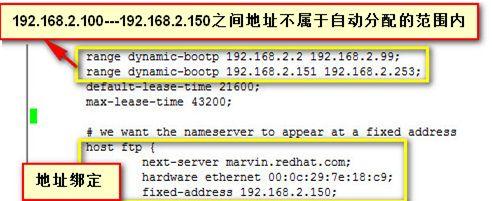
8、到客户端再次释放并重获得ip地址，然后再服务器端观察日志
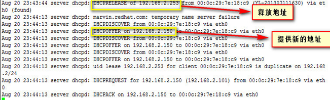
二、在linux上实现超级作用域的dhcp服务
（ 本实训的基础设施是VMware Workstation虚拟机里linux enterprise 5.4系统的主机、winxp的主机和win2003主机）
1、 在网络环境比较大的情况下单作用域显然不够用，这时候就用到超级作用域，即把多个作用域合并成一个大的作用域。当客户端把一个作用域里的地址挑选完之后，才会从另一个作用域中挑选地址，由于环境有限我们只能把作用域的地址池设一个地址，在dhcp配置文件中作如下配置
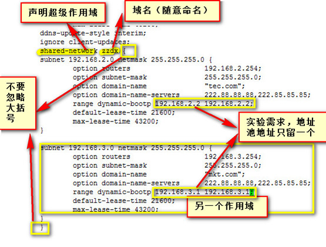
配置后重启服务
2、开启xp系统的客户端，释放并重获地址，在服务器端的日志如下
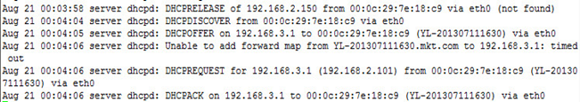
开启win2003系统的客户端，设置为自动获得ip，在服务器端的日志如下
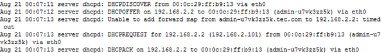
本文出自 “xiaoxiaozhou” 博客，请务必保留此出处http://xiaoxiaozhou.blog.51cto.com/4681537/1291954